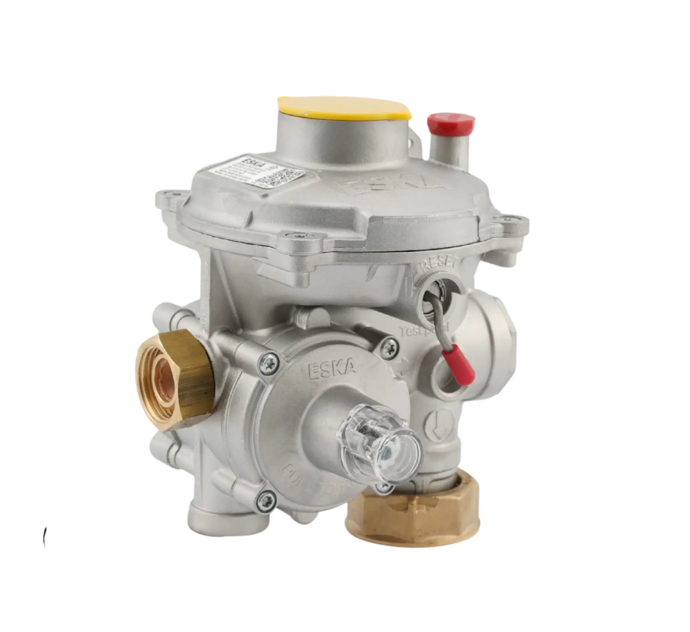

RMS-A İstasyonu
Yüksek basınç iletim hatları ve şehir şebekesi için hassas regülasyon ve ölçüm istasyonu.


5000 m³/h RMS-B İstasyonu
İGDAŞ standartlarına tam uyumlu, 1 Asıl + 1 Yedek yüksek debili endüstriyel istasyon imalatımız.

500 m³/h RMS-C İstasyonu
Fabrikalar ve kazan daireleri için 1 Asıl + 1 Yedek çift hatlı basınç düşürme ve ölçüm istasyonu.

750 m³/h RMS-C İstasyonu
Hassas tüketim fabrikaları için optimize edilmiş 1 Asıl + 1 Yedek hat istasyonu.

1000 m³/h RMS-C İstasyonu
Yüksek debili endüstriyel tesislerin kesintisiz gaz arzı için 1 Asıl + 1 Yedek güvenli istasyon mimarimiz.


400 m³/h RS-C İstasyonu
Düşük debili endüstriyel tesisler ve işletmeler için tek hatlı emniyet kapatmalı regülasyon istasyonu.

Çelik Filtre (Tip 1)
Gaz hatlarındaki partikülleri yüksek hassasiyetle süzerek ekipman emniyeti sağlar.

Çelik Filtre (Tip 2)
Yüksek basınç sınıflarına uygun, flanş bağlantılı özel endüstriyel kartuş filtre hattı.

Endüstriyel Eşanjörler
Basınç düşümü esnasında meydana gelen donmaları önlemek amacıyla tasarlanan ısı değiştiriciler.

ERG-SE (Çift Kademeli)
OPSO, aşırı akış ve dahili relief emniyet kapatma sistemlerine sahip çift kademeli domestik regülatör.
ERG-SR (Çift Kademeli)
Farklı tüketim debilerinde hassas kararlılık sunan ve geniş basınç skalasında çalışan çift kademeli modül.
ERG-S (Çift Kademeli)
Kazan daireleri ve servis hatları için emniyet kapatmasız, kesintisiz çift kademeli regülasyon ünitesi.
ERG (Tek Kademeli)
Dahili OPSO emniyet kapatmalı, yalın mekanik mimarili tek kademeli klasik gaz regülatörü.
ERG-E (Tek Kademeli)
Birleşik yüksek ve düşük basınç emniyet kapatmalı, ekonomik tek kademeli regülatör.
ERG-H (Tek Kademeli)
Kesintisiz gaz arzının kritik olduğu endüstriyel hatlar için emniyet kapatmasız tek kademeli regülatör.
ERG-EH (Tek Kademeli)
Harici algılama hattı gerektirmeyen, entegre emniyet kapatmalı tek kademeli regülasyon ünitesi.
ERG-H1
Yüksek debili ağlar için kararlı akış sunan doğrudan etkili ağır hizmet tipi endüstriyel regülatör.
ERG-H5
Dengeli klape yapısı ve entegre emniyet kapatmasıyla sanayi hatları ve fırınlar için basınç regülatörü.
ERG-H6
Gaz motorları ve kojenerasyon hatları için optimize edilmiş yüksek debili endüstriyel regülatör.
ERG-H7
Yüksek giriş basınçlarında kararlı debi kontrolü sağlayan döküm gövdeli ağır sanayi regülatörü.
Flanşlı Küresel Vana (API-6D)
API-6D güvencesiyle üretilmiş yüksek basınçlı flanşlı hat kesme vanası.
Kaynaklı Küresel Vana (API-6D)
Yekpare kaynaklı vana hattı.
S300 Duvar Tipi Kutu
Bina girişleri ve konut bağlantıları için geliştirilmiş şehir şebeke servis kabini.


S2300 Duvar Tipi Kutu
Çift regülatör montajına uygun geniş iç hacimli ve emniyet kilitli ticari servis kutusu.
CES200 Yer Altı Kutu
Ağır zemin baskı kuvvetlerine ve trafiğe dayanıklı yer altı regülatör seti servis kutusu.
S700 Duvar Tipi Kutu
Düz veya bombeli kapaklı, içine regülatör montajlı modüler duvar tipi servis kutusu.
S220 Yeraltı Tipi Kutu
Ağır zemin trafiğine dayanıklı, OPSO ve aşırı akış emniyetli yer altı servis kutusu.